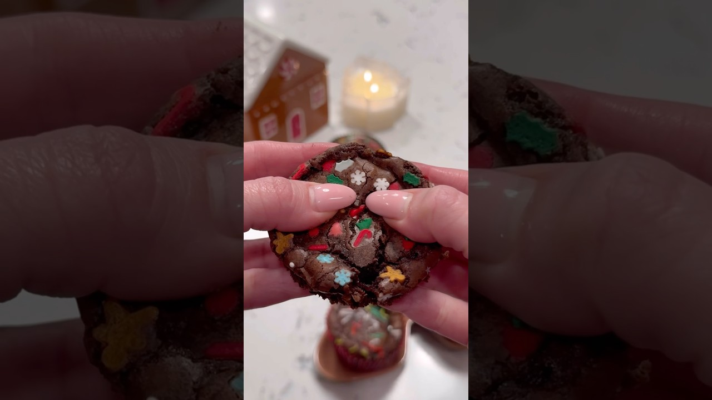

Brownie cupcakes with a holiday sugar cookie hiding inside, from Kate_cleanhome's short. Two boxes, one muffin tin, zero skill required — the payoff is breaking one open and finding a snowman in there.
Heat the oven to 350°F and line a 12-cup muffin tin with paper liners.
Drop one square of cookie dough into each liner, printed side up. No flattening, no fuss — they spread on their own.
Mix the brownie batter per the box, then pour it over the cookies, filling each cup about two-thirds full so the cookie is buried.
Shower the tops with Christmas sprinkles. Be generous — half of them sink.
Bake 15–20 minutes, until the tops are set and crackly but the centers still test fudgy. Cool in the tin 10 minutes — then break one in half for the reveal.